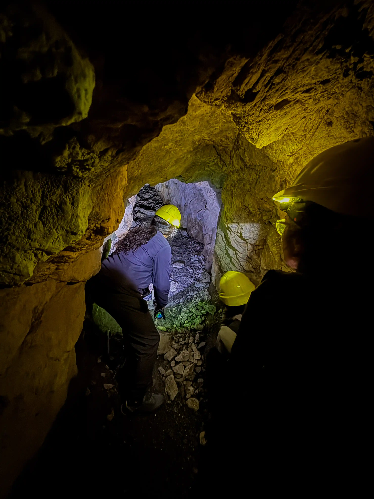
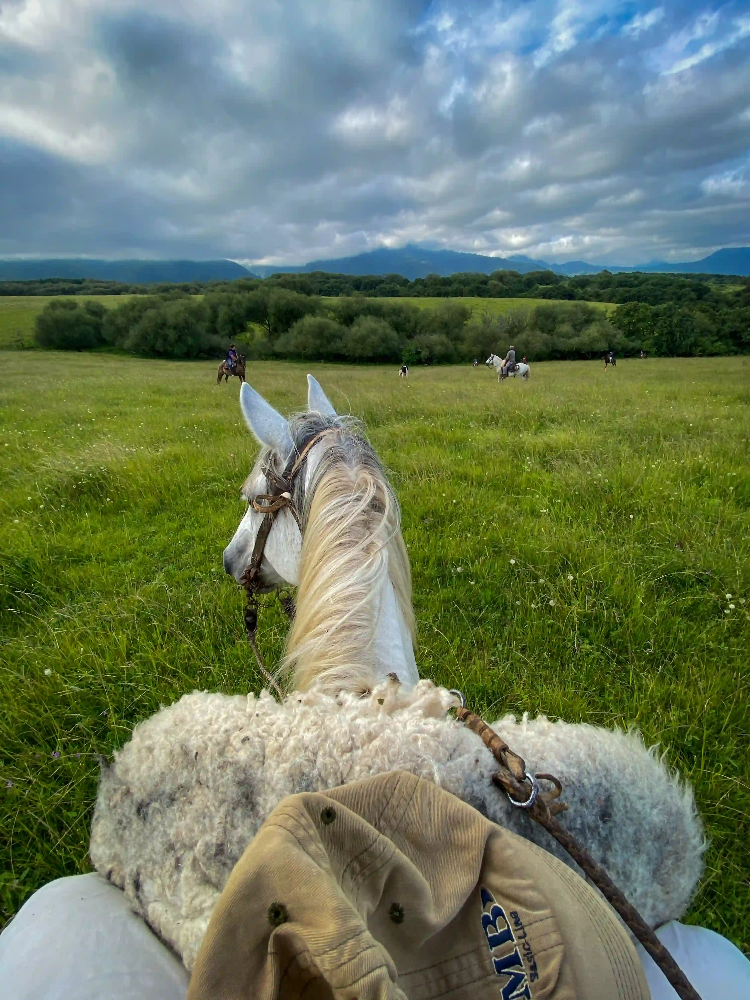

Túneles de Yunca
Antiguas construcciones tomadas por la vegetación de yungas, ideales para una caminata de aventura entre montaña, humedad y verde. Se llega en excursión guiada desde los parajes del circuito, combinando tramos en vehículo y a pie; te recomendamos coordinar la salida con un guía local para conocer el estado del camino.
Charqueadero
Uno de los parajes que forman el circuito de Aconquija, sobre la Ruta Provincial 48. Un pueblo tranquilo rodeado de sierra, ideal para el paso previo o posterior a una caminata por la zona.

Río Potrero
El paraje más al norte del circuito, a orillas del Río del Campo. Un lugar de aguas frescas de montaña, perfecto para refrescarse después de una jornada de trekking o cabalgata.

Yunca Suma
Uno de los parajes con más oferta de alojamiento del circuito, con cabañas y complejos rodeados de vegetación de yungas. Buen punto de partida para las excursiones hacia los túneles y los senderos cercanos.

Trekking
Circuitos a pie entre los parajes de la sierra, atravesando vegetación nativa de yungas, arroyos y miradores. Hay opciones cortas y de jornada completa según el nivel de cada grupo.

Cabalgatas
Recorré los caminos entre los parajes del circuito a caballo, guiado por baqueanos de la zona. Una forma tradicional de conocer la sierra al ritmo de la montaña.

Senderismo
Caminatas suaves entre los parajes del circuito, ideales para hacer en familia o sin experiencia previa, con vistas al valle y al Río del Campo.

Naturaleza
Vegetación nativa de yungas, arroyos de montaña y una fauna variada como parte del paisaje que envuelve a todo el circuito. El microclima fresco de la zona la hace ideal para el descanso.